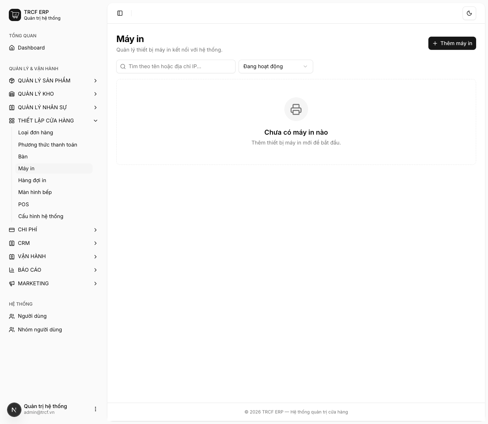
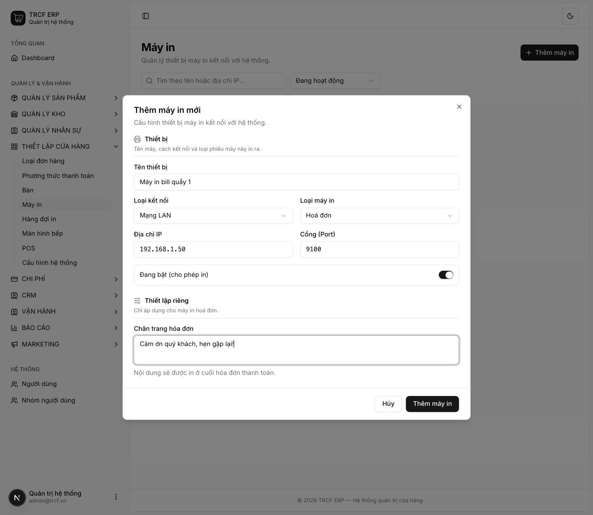
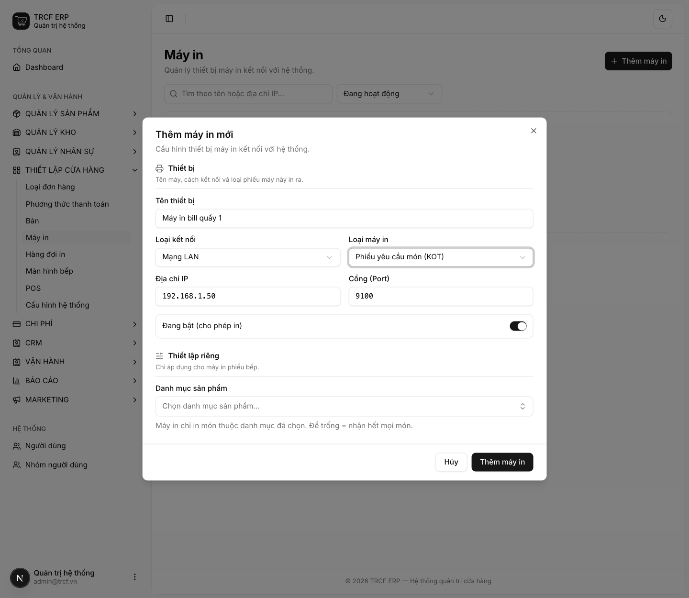
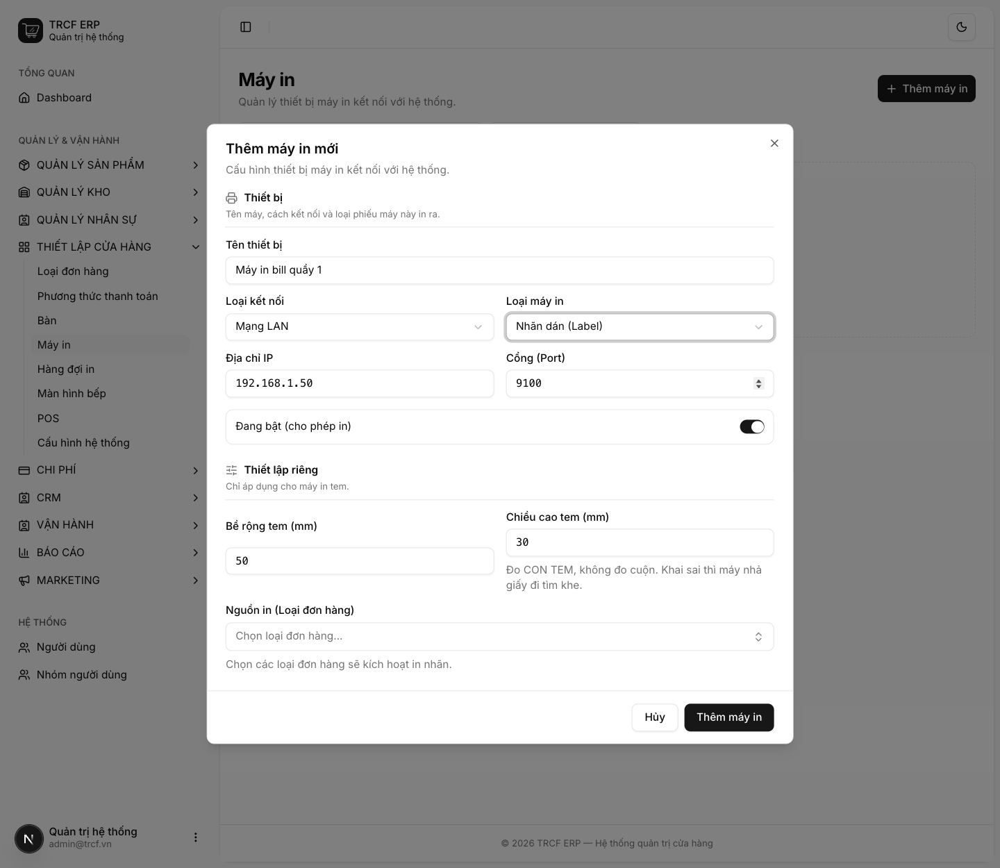

Chương 4 · Thiết lập POS
4.3 Cấu hình máy in POS
1. Đường dẫn vào chức năng
Menu trái: Thiết lập cửa hàng → Máy in (địa chỉ /printers).
2. Ví dụ nền và các bước thực hiện
Ví dụ: quán có 3 máy in.
- "Máy in bill quầy 1": loại Hoá đơn, mạng LAN, IP "192.168.1.50", cổng "9100".
- Máy KOT khu pha chế: chỉ in món danh mục "Cà phê", "Trà".
- Máy tem: in nhãn dán dán lên ly.
Bước 1Mở trang Máy in
- Bấm Thiết lập cửa hàng ở menu trái.
- Chọn Máy in.
- Bấm Thêm máy in.

Bước 2Khai máy in hoá đơn
- Tên thiết bị: nhập "Máy in bill quầy 1".
- Loại kết nối: chọn "Mạng LAN".
- Loại máy in: chọn "Hoá đơn".
- Địa chỉ IP: nhập "192.168.1.50".
- Cổng (Port): giữ "9100".
- Chân trang hóa đơn: nhập "Cảm ơn quý khách, hẹn gặp lại!"
- Bấm nút Thêm máy in trong hộp thoại.

Bước 3Khai máy in phiếu bếp (KOT)
- Loại máy in: chọn "Phiếu yêu cầu món (KOT)".
- Nhóm Thiết lập riêng đổi theo loại máy.
- Danh mục sản phẩm: chọn "Cà phê", "Trà".
- Để trống ô này: máy in mọi món.

Bước 4Khai máy in tem (Nhãn dán)
- Loại máy in: chọn "Nhãn dán (Label)".
- Bề rộng tem (mm), Chiều cao tem (mm): nhập số đo con tem.
- Nguồn in (Loại đơn hàng): chọn loại đơn nào sẽ in tem.

3. Giải thích các trường
Thiết bị
| Trường | Điền gì | Bắt buộc |
|---|---|---|
| Tên thiết bị | VD "Máy in bill quầy 1" | ✅ |
| Loại kết nối | Mạng LAN (có IP) hoặc USB (cắm trực tiếp) | ✅ |
| Loại máy in | Hoá đơn / Nhãn dán / Phiếu yêu cầu món (KOT) / Phiếu đóng ca | ✅ |
| Địa chỉ IP, Cổng (Port) | Chỉ hiện khi chọn LAN. Cổng thường 9100 | ✅ nếu LAN |
| Đang bật (cho phép in) | Tắt: tạm ngừng in ra máy này | — |
Thiết lập riêng theo loại máy
| Loại máy | Khai thêm |
|---|---|
| Hoá đơn | Chân trang hoá đơn: câu in ở cuối bill |
| Nhãn dán | Bề rộng / Chiều cao tem (mm) và Nguồn in (loại đơn nào thì in tem) |
| Phiếu bếp (KOT) | Danh mục sản phẩm: máy chỉ in món thuộc danh mục đã chọn. Để trống: in mọi món |
| Phiếu đóng ca | Không cần khai thêm |
Bố trí máy in mẫu
| Vị trí | Loại máy | Danh mục chọn |
|---|---|---|
| Quầy thu ngân | Hoá đơn | — |
| Khu pha chế | KOT | Cà phê, Trà |
| Khu bếp nóng | KOT | Đồ ăn |
Sau khi khai máy in, gán máy cho quầy ở mục 4.1.
4. Lưu ý quan trọng
⚠️
Chiều cao tem phải đo con tem, không đo cuộn.
- Khai sai thì máy nhả giấy đi tìm khe cắt.
- Kết quả là ra tem trắng.
⚠️
Máy in nhiệt phổ thông (POS-80) không có bảng mã tiếng Việt.
- Hệ thống in tiếng Việt bằng cách vẽ ảnh.
- Bill mất dấu: kiểm tra lại loại máy đã khai.